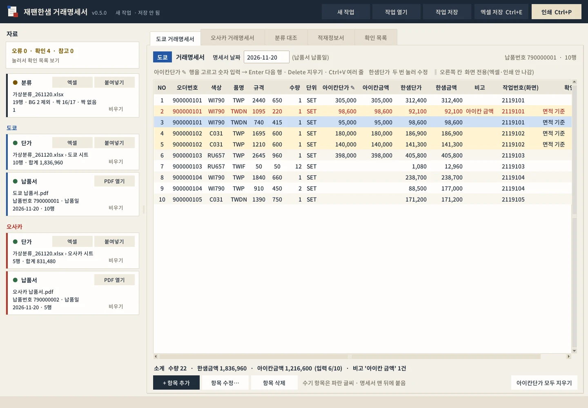
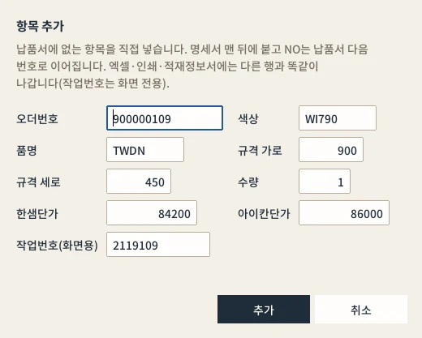
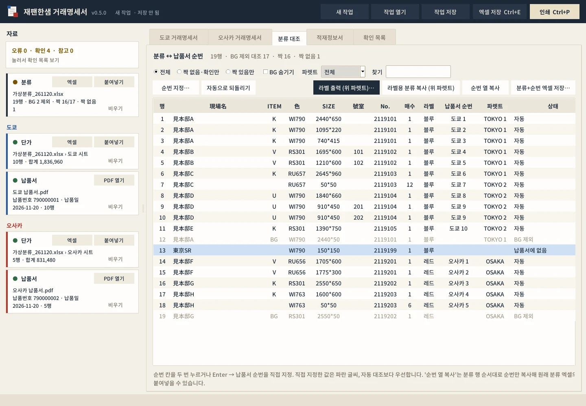
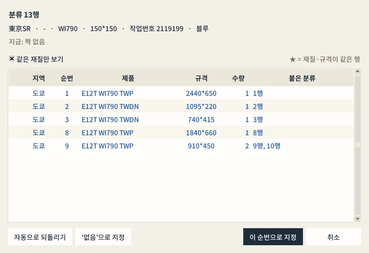
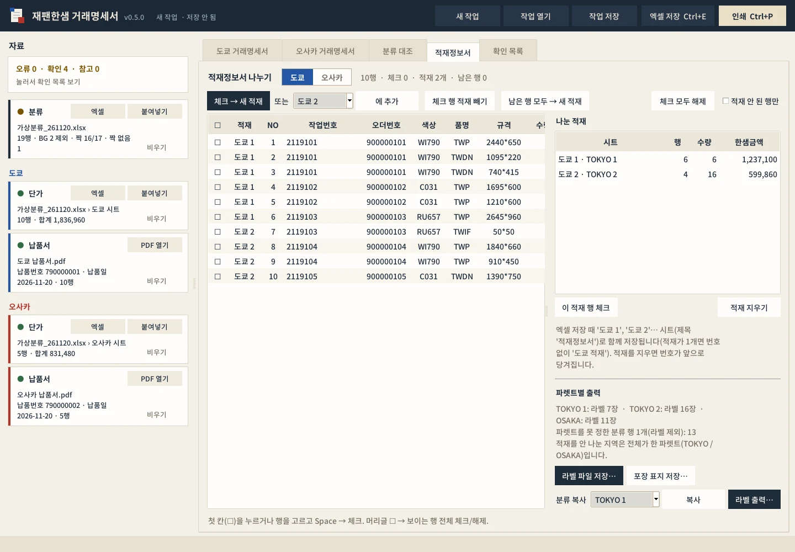
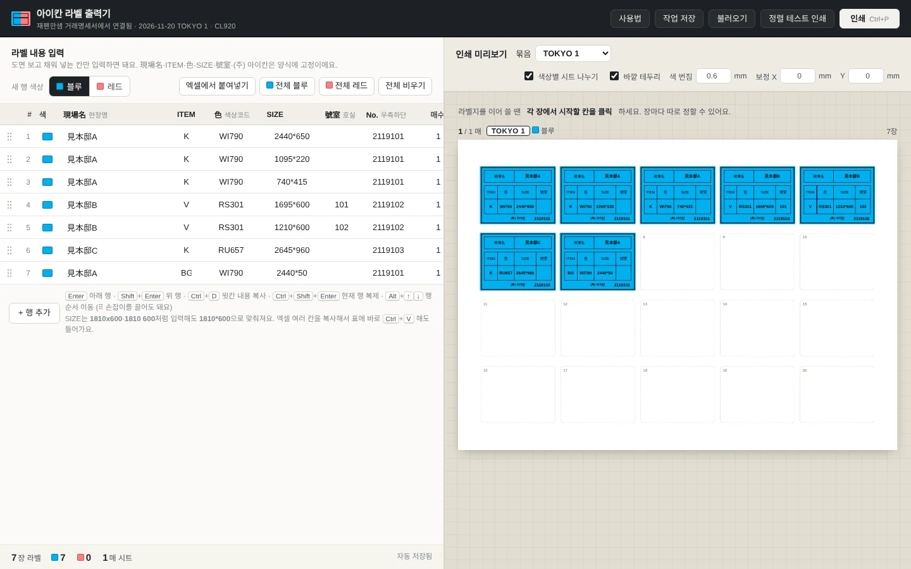
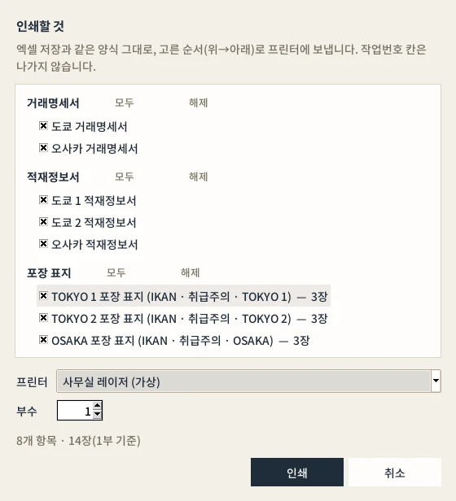
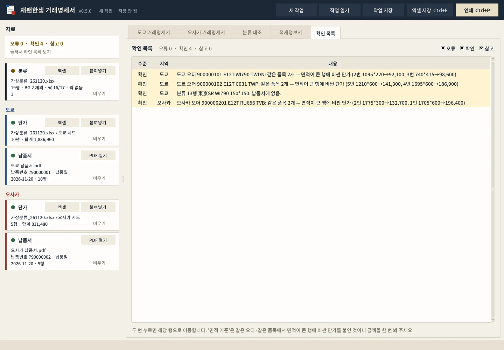

USER MANUAL · 0.5.0
아이칸 재팬한샘 거래명세서
- 기준 버전0.5.0
- 기준일2026-11-12
- 운영체제Windows 10/11 64비트
- 필요바로 인쇄할 때만 Microsoft Excel 데스크톱
재팬한샘(도쿄·오사카) 납품분의 거래명세서와 적재정보서를 만드는 프로그램입니다. 분류 엑셀, PO 상세수집 단가, 한샘 SRM 납품서 PDF를 서로 대조해서 납품서 순번 그대로 명세서를 채우고, 파렛트별 라벨·포장 표지까지 이어서 뽑습니다.
참고
이 매뉴얼의 화면과 예시는 모두 가상 자료입니다. 현장명(見本邸A 등)·오더번호(9000001xx)·작업번호·단가는 실제 납품과 관계없는 값입니다.
CHAPTER 01
프로그램 개요
엑셀로 손으로 옮겨 적던 재팬한샘 거래명세서를 자료 세 가지로 자동으로 만듭니다. 사람은 아이칸단가만 입력하고, 확인 목록에 뜬 몇 줄만 눈으로 보면 됩니다.
1-1. 주요 기능 한눈에 보기
| 기능 | 설명 |
|---|---|
| 자료 세 가지 대조 | 분류(라벨 자료) · 단가(PO 상세수집) · 납품서 PDF를 오더번호·재질·규격으로 짝지음 |
| 거래명세서 | 도쿄·오사카 따로, 납품서 PDF 순번 그대로. 한샘단가·금액 자동, 아이칸단가는 입력 |
| 비고 자동 | 아이칸금액이 한샘금액보다 클 때만 아이칸 금액 |
| 분류에 순번 기록 | 분류 행마다 납품서 순번(예: 도쿄 7)을 붙여 복사하거나 새 엑셀로 저장 |
| 적재정보서 | 체크해서 적재(파렛트)를 나누면 도쿄 1·도쿄 2 … 시트로 저장 |
| 파렛트별 라벨 | 파렛트마다 분류 행(BG 포함)을 라벨로 — 내장 라벨 출력기로 바로 인쇄 |
| 포장 표지 | 파렛트마다 IKAN/JAPAN HANSSEM · 취급주의 · TOKYO 1 3장 |
| 바로 인쇄 | 거래명세서·적재정보서·포장 표지를 골라 프린터로 (Excel 필요) |
| 작업 저장 | .ikanjp 파일 — 입력한 단가·나눈 적재까지 그대로 이어서 작업 |
1-2. 하지 않는 일
- 원본 엑셀·PDF는 읽기만 합니다. 고치거나 덮어쓰지 않습니다.
- 한샘 SRM에 접속하거나 무엇을 보내지 않습니다. 납품서 PDF·단가는 사람이 받아 둔 파일을 씁니다.
- 작업번호는 화면 전용입니다. 엑셀·인쇄에는 나가지 않습니다.
CHAPTER 02
설치와 실행
실행 중인 재팬한샘 거래명세서를 닫습니다.
IkanJpStatement_0.5.0.msi를 더블클릭해 설치합니다. 관리자 권한이 필요 없는 사용자별 설치입니다.시작 메뉴의 아이칸 재팬한샘 거래명세서로 실행합니다.
새 버전도 같은 방법으로 설치하면 기존 설치를 바꿔 줍니다. 작업 파일(.ikanjp)과 설정은 그대로 남습니다.
| 항목 | 위치 |
|---|---|
| 설치 폴더 | %LOCALAPPDATA%\Programs\IkanJpStatement |
| 설정(마지막 폴더·프린터) | %LOCALAPPDATA%\IkanJpStatement\settings.json |
| 인쇄·라벨용 임시 파일 | %LOCALAPPDATA%\IkanJpStatement\ 아래 (매번 새로 만듦) |
참고
설치 파일 없이 쓰는 휴대용 묶음(IkanJpStatement_0.5.0_portable.zip)도 있습니다. 압축을 풀고 폴더째 두고 IkanJpStatement.exe를 실행합니다.
CHAPTER 03
준비할 자료
| 자료 | 내용 | 넣는 곳 |
|---|---|---|
| 분류 | 일본한샘 분류 8열: 現場名 · ITEM · 色 · SIZE · 號室 · No.(작업번호) · 매수 · 라벨색 | 왼쪽 분류 카드 [엑셀] 또는 [붙여넣기] |
| 도쿄·오사카 단가 | PO 상세수집 8열: 자재명 · 납품처 · 저장소 · 수량 · 단위 · 단가 · 합계 · 오더번호 | 분류 엑셀에 도쿄·오사카 시트가 있으면 분류를 열 때 같이 읽힘. 따로 [엑셀]·[붙여넣기]도 됨 |
| 도쿄·오사카 납품서 | 한샘 SRM 납 품 서 (집계) PDF |
지역 카드의 [PDF 열기] |
- 라벨색 블루 = 도쿄, 레드 = 오사카입니다. 라벨색이 빈 행은 규격으로 지역을 찾고 '확인'으로 표시합니다.
- 분류의 BG 행은 납품서와 대조하지 않습니다. (라벨·파렛트에는 들어갑니다 → 12장)
- 단가는 PO 상세수집 북마크로 모은 표를 그대로 씁니다.
CHAPTER 04
빠른 작업 순서
분류 카드
[엑셀]→ 분류 파일을 고릅니다.도쿄·오사카시트가 있으면 단가도 함께 들어옵니다.도쿄 납품서 카드
[PDF 열기], 오사카도 같은 방법으로 엽니다.왼쪽 위 오류 · 확인 · 참고 숫자를 봅니다. 오류가 있으면 눌러서 확인 목록으로 갑니다(16장).
도쿄 거래명세서 탭에서 아이칸단가를 입력합니다(행을 고르고 숫자 → Enter).
오사카도 같은 방법으로 입력합니다.
분류 대조 탭에서 '납품서에 없음' 행(샘플 등)을 확인하고 필요하면 순번을 직접 지정합니다.
적재정보서 탭에서 파렛트를 나눕니다(체크 →
[체크 → 새 적재]).파렛트마다
[라벨 출력…]으로 라벨을,[포장 표지 저장…]으로 표지를 뽑습니다.[엑셀 저장](Ctrl+E) 또는[인쇄](Ctrl+P)로 명세서·적재정보서를 냅니다.[작업 저장](Ctrl+S)으로.ikanjp를 남겨 둡니다.
CHAPTER 05
화면 구성

- 1오류·확인·참고확인 목록의 개수. 누르면 확인 목록 탭으로 갑니다.
- 2분류 카드엑셀·붙여넣기로 분류를 넣습니다. 이름 앞 점 색이 상태(초록 들어옴 · 갈색 확인할 것).
- 3납품서 카드PDF 열기로 SRM 납품서 PDF를 엽니다. 납품번호·납품일·행 수가 나옵니다.
- 4명세서 날짜기본은 납품일. 2026-11-20처럼 고쳐 쓸 수 있습니다.
- 5아이칸단가 ✎행을 고르고 숫자를 치면 입력 칸이 열립니다. Enter = 저장하고 다음 행.
- 6비고아이칸금액이 한샘금액보다 클 때만 '아이칸 금액'.
- 7확인 칸'면적 기준' 등 한 번 볼 것. 작업번호·확인 칸은 화면 전용입니다.
- 8소계수량·한샘금액·아이칸금액(입력 행 수)·비고 건수.
- 9+ 항목 추가납품서에 없는 항목을 직접 넣습니다(수기 항목).
| 구역 | 내용 |
|---|---|
| 상단 막대 | 버전·작업 이름, [새 작업] [작업 열기] [작업 저장] [엑셀 저장 Ctrl+E] [인쇄 Ctrl+P] |
| 왼쪽 자료 | 오류·확인·참고 개수, 분류 카드, 도쿄·오사카의 단가·납품서 카드. 카드 이름 앞 점: 초록 = 들어옴, 갈색 = 확인할 것 있음, 빨강 = 오류, 회색 = 아직 없음 |
| 가운데 탭 | 도쿄 거래명세서 · 오사카 거래명세서 · 분류 대조 · 적재정보서 · 확인 목록 (Ctrl+1~5) |
카드마다 [비우기]가 있습니다. 잘못 넣은 자료만 비우고 다시 넣을 수 있습니다. 분류를 바꾸면 직접 지정했던 순번은 비워집니다(분류 행이 달라졌을 때만).
CHAPTER 06
자료 넣기
6-1. 분류
[엑셀]: 분류 엑셀을 고릅니다. 첫 시트(또는분류시트)의 8열을 읽고, 같은 파일의도쿄·오사카시트를 단가로 함께 읽습니다.[붙여넣기]: 엑셀에서 8열을 복사해 창에 붙여넣습니다. 머리글 행이 있어도 됩니다.- 카드 아래에
19행 · BG 2 제외 · 짝 16/17 · 짝 없음 1처럼 요약이 나옵니다.
6-2. 단가 (도쿄·오사카)
- 분류 엑셀에 시트가 있으면 따로 할 일이 없습니다.
- 따로 넣을 때는 지역 단가 카드
[엑셀](시트 선택) 또는[붙여넣기]. PO 상세수집 결과 8열 그대로 붙여넣습니다. - 오더번호 앞
0은 있어도 없어도 같은 오더로 봅니다.
6-3. 납품서 PDF
- 지역 납품서 카드
[PDF 열기]→ SRM에서 받은납 품 서 (집계)PDF. - 납품번호·납품일·행 수를 읽어 카드에 보여 줍니다. 명세서 날짜의 기본값이 납품일입니다.
- 글자를 고를 수 없는(사진처럼 찍힌) PDF는 읽지 못합니다. SRM에서 다시 내려받아 주세요.
CHAPTER 07
대조 규칙
7-1. 분류 ↔ 납품서
재질 + 규격(가로*세로)이 같으면 짝입니다.
C031과RS301은 같은 재질로 봅니다.- 가로·세로가 바뀐 채로 같으면 짝짓되 '확인'으로 표시합니다.
- 납품서 한 행의 수량만큼만 분류 행을 받습니다. 같은 규격이 다 차면 남는 분류 행은 '같은 규격 납품 수량이 이미 다 찼습니다'.
- 샘플(예:
東京SR 150*150)처럼 납품서와 구성이 다른 행은 '납품서에 없음'으로 남습니다 → 분류 대조 탭에서 직접 지정합니다(10장).
7-2. 납품서 ↔ 단가
오더번호 + 자재명(E12T WI790 TWDN)이 같은 것끼리 짝입니다.
- 같은 오더에 같은 자재가 여러 개면 수량이 같은 것끼리 묶고, 그 안에서 면적(가로×세로)이 큰 행에 더 비싼 단가를 붙입니다. 면적이 같으면 오더 순번 순서입니다.
- 이렇게 붙인 행은 확인 칸에 '면적 기준' 으로 표시됩니다. 금액을 한 번 봐 주세요.
- 단가를 못 찾은 행은 '오류(단가 없음)'. 한샘단가를 직접 입력하면 오류가 풀립니다.
예: 오더 900000101에 TWDN 두 줄 — 1095*220(면적 240,900)과 740*415(면적 307,100). 단가 자료에 92,100과 98,600이 있으면 740*415에 98,600, 1095*220에 92,100이 붙습니다.
CHAPTER 08
거래명세서 탭 (도쿄 / 오사카)
납품서 PDF 순번 그대로 한 줄씩 나옵니다.
| 칸 | 내용 |
|---|---|
| NO | 납품서 순번. 수기 항목은 납품서 다음 번호 |
| 오더번호 · 색상 · 품명 · 규격 | 납품서에서 (규격은 가로, 세로 두 칸) |
| 수량 · 단위 | 수량, 단위는 SET |
| 아이칸단가 ✎ · 아이칸금액 | 직접 입력, 금액 = 단가 × 수량 |
| 한샘단가 · 한샘금액 | 단가 자료에서. 직접 고치면 옆에 * |
| 비고 | 아이칸금액 > 한샘금액일 때만 아이칸 금액 |
| ‖ 작업번호(화면) · 확인 | 화면 전용. 엑셀·인쇄에 나가지 않음 |
8-1. 아이칸단가 입력
행을 고르고 숫자를 바로 칩니다(또는 F2). 입력 칸이 열립니다.
Enter = 저장하고 다음 행, Esc = 취소, Delete = 지우기.
다른 곳에서 복사한 단가 여러 줄은 첫 행을 고르고 Ctrl+V — 아래로 차례로 들어갑니다.
[아이칸단가 모두 지우기]는 지금 지역의 아이칸단가만 지웁니다.
8-2. 비고 규칙
- 아이칸금액이 한샘금액보다 클 때만
아이칸 금액. - 같거나 작으면 공란, 아이칸단가가 비어 있어도 공란.
- 엑셀에는 수식으로 들어가서, 엑셀에서 단가를 고쳐도 비고가 다시 계산됩니다.
8-3. 한샘단가 고치기
한샘단가 칸을 두 번 누르면 직접 입력할 수 있습니다. 고친 값 옆에 *가 붙습니다. 값을 지우면 원래 단가로 돌아갑니다.
8-4. 날짜·소계·복사
- 명세서 날짜는 납품일이 기본값입니다. 고치려면
2026-11-20처럼 입력합니다. - 아래 소계: 수량 · 한샘금액 · 아이칸금액(입력 n/전체) · 비고 건수.
- 행을 골라 Ctrl+C → 엑셀 칸 순서대로 복사됩니다(작업번호 제외). Ctrl+A는 전체 선택.
CHAPTER 09
항목 추가·수기 입력

- 1오더번호~단가납품서처럼 오더번호·색상·품명·규격·수량·단가를 넣습니다.
- 2작업번호(화면용)화면에만 보입니다. 엑셀·인쇄에 나가지 않습니다.
- 3추가명세서 맨 뒤에 파란 글씨로 붙습니다.
납품서에 없는 항목을 명세서에 직접 넣습니다.
거래명세서 탭 아래
[+ 항목 추가].오더번호 · 색상 · 품명 · 규격(가로·세로) · 수량 · 한샘단가 · 아이칸단가 · 작업번호(화면용)를 입력합니다.
[추가]→ 명세서 맨 뒤에 붙고, NO는 납품서 다음 번호로 이어집니다.
- 수기 항목은 파란 글씨, 확인 칸 '수기 항목'.
- 두 번 누르거나
[항목 수정…]으로 고치고,[항목 삭제]로 지웁니다. - 엑셀·인쇄·적재정보서에는 다른 행과 똑같이 나갑니다. 분류 대조·단가 대조에는 쓰이지 않습니다.
참고
수기 항목이 든 작업 파일은 0.4.0 이상에서만 열립니다.
CHAPTER 10
분류 대조 탭

- 1거르기전체 / 짝 없음·확인만 / 짝 있음만, BG 숨기기.
- 2파렛트한 파렛트 행만 보기. 아래 라벨 출력·복사도 이 파렛트 기준.
- 3라벨 출력 (위 파렛트)내장 라벨 출력기를 그 파렛트 라벨이 채워진 채로 엽니다.
- 4라벨용 분류 복사그 파렛트의 분류 8열(BG 포함)을 복사합니다.
- 5납품서 순번분류 행에 붙은 납품서 순번. 두 번 누르면 직접 지정.
- 6파렛트이 분류 행 라벨이 들어갈 파렛트.
- 7납품서에 없음샘플처럼 구성이 다른 행. 두 번 눌러 순번을 지정하거나 그대로 둡니다.
분류 행마다 붙은 납품서 순번(예: 도쿄 7)과 파렛트를 보여 줍니다. 인쇄 도면에 순번을 손으로 적을 때 이 표를 봅니다.
| 위쪽 거르기 | 뜻 |
|---|---|
| 전체 / 짝 없음·확인만 / 짝 있음만 | 상태로 거르기 |
| BG 숨기기 | BG 행 감추기 (회색 'BG 제외') |
| 파렛트 | 한 파렛트 행만 보기 (라벨 복사·출력도 이 파렛트 기준) |
| 찾기 | 현장명·작업번호·규격 등으로 찾기 |
10-1. 순번 직접 지정
행을 두 번 누르거나 Enter → 순번 지정 창.
납품서 행을 골라
[이 순번으로 지정], 또는['없음'으로 지정].직접 지정한 행은 파란 글씨이며 자동 대조보다 우선합니다.
[자동으로 되돌리기]로 되돌립니다.
샘플(150*150 등)이나 납품서 구성이 다른 특수 행은 사람이 판단해서 여기서 붙여 줍니다.

- 1분류 행지정할 분류 행의 현장명·재질·규격·작업번호·라벨색.
- 2같은 재질만 보기끄면 그 지역 납품서 행이 모두 보입니다. ★ = 재질·규격이 같은 행.
- 3붙은 분류그 납품서 행에 이미 붙은 분류 행 번호.
- 4자동으로 되돌리기직접 지정을 지우고 자동 대조로.
- 5'없음'으로 지정이 행은 납품서와 짝이 없다고 확정.
- 6이 순번으로 지정고른 납품서 행에 붙입니다(파란 글씨, 자동보다 우선).
10-2. 순번을 분류 엑셀로
[순번 열 복사]: 분류 행 순서대로 순번만 복사 → 원래 분류 엑셀의 빈 열 첫 칸에 붙여넣기.[분류+순번 엑셀 저장…]: 원래 분류 파일을 새 이름으로 저장하면서 빈 칸(號室 E열이 비었으면 E열, 아니면 첫 빈 열)에 순번을 적습니다. 원본에는 덮어쓰지 않습니다.
CHAPTER 11
적재정보서와 파렛트

- 1지역도쿄 / 오사카를 바꿉니다.
- 2체크 → 새 적재체크한 행으로 새 적재를 만듭니다.
- 3기존 적재에 추가목록에서 적재를 고르고 에 추가.
- 4남은 행 모두아직 안 나눈 행 전부를 새 적재로.
- 5체크 칸누르거나 Space. 머리글 ☐은 보이는 행 전체.
- 6나눈 적재시트 이름 · 파렛트 이름 · 행 · 수량 · 한샘금액.
- 7라벨 파일 저장파렛트 묶음이 든 라벨 출력기 v3용 파일(.json).
- 8포장 표지 저장파렛트마다 3장짜리 포장 표지 엑셀.
- 9분류 복사고른 파렛트의 분류 8열(BG 포함)을 복사.
- 10라벨 출력…내장 라벨 출력기를 브라우저로 엽니다.
11-1. 적재 나누기
위에서
[도쿄]/[오사카]를 고릅니다.첫 칸 ☐을 누르거나 행을 고르고 Space로 체크합니다. 머리글 ☐은 보이는 행 전체 체크/해제.
[체크 → 새 적재], 또는[도쿄 1 ▾] [에 추가]로 기존 적재에 넣습니다.마지막에
[남은 행 모두 → 새 적재].
[체크 행 적재 빼기]: 적재에서 뺍니다.[적재 지우기]: 그 적재를 없애고 번호를 앞으로 당깁니다.적재 안 된 행만을 켜면 아직 나누지 않은 행만 보입니다.- 오른쪽 나눈 적재 표에 시트별 행 수·수량·한샘금액이 나옵니다.
[이 적재 행 체크]로 그 적재의 행을 다시 고를 수 있습니다.
적재정보서 행은 납품서 순번 순서이고, NO는 시트 안에서 1부터 다시 매깁니다.
11-2. 이름 규칙 — 적재가 하나면 번호 없음
| 지역의 적재 수 | 화면 | 적재정보서 시트 | 파렛트(라벨·표지) |
|---|---|---|---|
| 1개 (또는 안 나눔) | 도쿄 | 도쿄 적재 (날짜 칸 (도쿄)) |
TOKYO |
| 2개 이상 | 도쿄 1, 도쿄 2 … | 도쿄 1, 도쿄 2 … |
TOKYO 1, TOKYO 2 … |
오사카도 같습니다(OSAKA, OSAKA 1 …). 적재를 나누지 않은 지역은 전체가 한 파렛트입니다.
CHAPTER 12
파렛트별 라벨
라벨은 분류 행 그대로(現場名·ITEM·色·SIZE·號室·No.·매수·라벨색)입니다. 납품서 순번은 넣지 않고, BG도 포함합니다.
12-1. 어느 파렛트로 가나
- 납품서와 짝이 있는 분류 행 → 그 납품서 행이 들어간 파렛트.
- BG·샘플처럼 짝이 없는 행 → 같은 지역·같은 작업번호가 든 파렛트(샘플은 같은 재질 우선). 여럿이면 첫 파렛트.
- 그래도 못 정한 행은 '파렛트를 못 정한 분류 행'으로 알려 주고 라벨에서 빠집니다. 분류 대조 탭에서 순번을 지정하면 들어갑니다.
12-2. 내장 라벨 출력기로 바로 인쇄
적재정보서 탭 오른쪽 아래
[분류 복사 TOKYO 1 ▾]에서 파렛트를 고르고[라벨 출력…]. (분류 대조 탭에서는파렛트를 고르고[라벨 출력 (위 파렛트)…])기본 브라우저에 아이칸 라벨 출력기가 그 파렛트 라벨이 채워진 채로 열립니다.
남은 라벨지가 있으면 시작 칸을 누르고,
[인쇄].
- 프린터 위치 보정(X/Y)·색 번짐은 단독 라벨 출력기에서 맞춰 둔 값을 처음 한 번 이어받고, 그 뒤로는 따로 기억합니다.
- 단독 라벨 출력기에서 작업 중이던 내용은 건드리지 않습니다.
- 사용법은 아이칸 라벨 출력기 매뉴얼과 같습니다(묶음 보기·시작 칸).

- 1연결 표시'재팬한샘 거래명세서에서 연결됨 · 날짜 · 파렛트'.
- 2묶음파렛트 묶음. 한 파렛트만 보고 인쇄할 수 있습니다.
- 3보정 X·Y단독 라벨 출력기 값을 처음 한 번 이어받고 그 뒤로 따로 기억합니다.
- 4시작 칸남은 라벨지는 장마다 시작할 칸을 눌러 지정합니다.
- 5인쇄브라우저 인쇄 창이 열립니다.
12-3. 라벨 파일·분류 복사
| 단추 | 결과 |
|---|---|
[라벨 파일 저장…] |
아이칸라벨_YYYYMMDD_파렛트.json — 단독 라벨 출력기 v3에서 [불러오기]. 행마다 묶음 = 파렛트 이름 |
[복사] (분류 복사 옆) |
고른 파렛트의 분류 8열을 복사 → 라벨 출력기 [엑셀에서 붙여넣기]나 엑셀에 붙여넣기 |
[라벨용 분류 복사 (위 파렛트)] |
분류 대조 탭에서 같은 기능. 전체면 9번째 열에 묶음까지 |
복사는 화면 거르기(BG 숨기기·찾기)와 상관없이 그 파렛트 전체가 들어갑니다.
CHAPTER 13
포장 표지
적재정보서 탭
[포장 표지 저장…]→포장표지_YYYYMMDD.xlsx.파렛트마다
IKAN/JAPAN HANSSEM·취급주의·TOKYO 13장이 차례로 들어 있습니다.엑셀에서 전체 통합 문서 인쇄, 또는 프로그램의
[인쇄]에서 포장 표지를 고릅니다.
CHAPTER 14
엑셀 저장과 인쇄
14-1. 엑셀 저장 (Ctrl+E)
[엑셀 저장]→ 저장할 시트(거래명세서 · 적재정보서)를 체크합니다.[저장 위치 고르기…]→거래명세서_YYYYMMDD.xlsx.
- 시트:
도쿄·오사카거래명세서 +도쿄 1·도쿄 2(또는도쿄 적재) … 적재정보서(제목적재정보서). - 금액·소계·비고는 수식이라 엑셀에서 단가를 고쳐도 다시 계산됩니다.
- 오류(단가 없음)가 남아 있으면 그 칸은 빈 칸으로 저장된다고 알려 줍니다.
14-2. 바로 인쇄 (Ctrl+P)
[인쇄]→ 거래명세서 · 적재정보서 · 포장 표지 중 찍을 것을 체크합니다.프린터와 부수를 고르고
[인쇄].
- 엑셀 저장과 같은 양식을 데스크톱 Excel로 보냅니다. Excel이 설치되어 있어야 합니다.
- Windows 기본 프린터는 바꾸지 않습니다. 마지막에 고른 프린터를 기억합니다.
- 오류가 남아 있거나 적재에 안 들어간 행이 있으면 한 번 더 묻습니다.

- 1거래명세서지역별 명세서. 묶음마다 모두·해제.
- 2적재정보서나눈 적재마다 한 장.
- 3포장 표지파렛트마다 3장(IKAN · 취급주의 · 파렛트 이름).
- 4프린터마지막에 고른 프린터를 기억합니다. Windows 기본 프린터는 바꾸지 않습니다.
- 5인쇄위→아래 순서로 보냅니다.
CHAPTER 15
작업 저장·열기
| 단추 | 결과 |
|---|---|
[작업 저장] Ctrl+S |
.ikanjp 작업 파일 — 읽은 자료 내용, 아이칸단가, 고친 한샘단가, 직접 지정한 순번, 나눈 적재, 날짜, 수기 항목 |
| Ctrl+Shift+S | 다른 이름으로 저장 |
[작업 열기] Ctrl+O |
.ikanjp 열기 |
[새 작업] Ctrl+N |
빈 작업 (저장 안 한 내용이 있으면 먼저 묻기) |
- 작업 파일에는 원본 파일 자체가 아니라 읽은 내용이 들어갑니다. 원본 엑셀·PDF가 없는 PC에서도 열립니다.
- 원본을 바꿨다면 해당 카드에서 다시 읽으면 됩니다. 납품서가 바뀌면 없어진 행은 적재에서 빠집니다.
CHAPTER 16
확인 목록

| 등급 | 뜻 | 예 |
|---|---|---|
| 오류 | 꼭 봐야 함. 그대로면 빈 칸 | 단가 없음 |
| 확인 | 한 번 볼 것 | 면적 기준 단가, 가로·세로 뒤바뀜, 납품서에 없음 |
| 참고 | 알고만 있으면 됨 | 샘플 행의 '분류 매수 1 / 납품 15' 같은 차이 |
항목을 두 번 누르면 해당 탭·행으로 이동합니다. 왼쪽 위 숫자를 눌러도 이 탭이 열립니다.
CHAPTER 17
단축키
| 키 | 동작 |
|---|---|
| Ctrl+N / Ctrl+O | 새 작업 / 작업 열기 |
| Ctrl+S / Ctrl+Shift+S | 작업 저장 / 다른 이름으로 |
| Ctrl+E | 엑셀 저장 |
| Ctrl+P | 인쇄 |
| Ctrl+1 ~ Ctrl+5 | 탭 이동 |
| 숫자 · F2 | 아이칸단가 입력 시작 |
| Enter / Esc / Delete | 입력 저장·다음 행 / 취소 / 지우기 |
| Ctrl+V · Ctrl+C · Ctrl+A | 단가 여러 줄 붙여넣기 · 행 복사 · 전체 선택 |
| Space | 적재정보서 체크 |
CHAPTER 18
문제 해결 (FAQ)
한샘단가가 비어 있고 '오류(단가 없음)'가 떠요.
단가 자료에 그 오더번호 + 자재명이 없습니다. 단가 시트가 그 날짜 것인지 확인하고, 맞다면 한샘단가 칸을 두 번 눌러 직접 입력합니다.
같은 품목인데 단가가 서로 바뀐 것 같아요.
같은 오더·같은 자재는 면적이 큰 행에 비싼 단가를 붙입니다('면적 기준' 표시). 실제와 다르면 한샘단가를 직접 고칩니다.
분류 행이 '납품서에 없음'으로 남아요.
샘플처럼 납품서와 구성이 다른 행입니다. 분류 대조 탭에서 두 번 눌러 납품서 행을 직접 지정하거나 '없음'으로 둡니다.
파렛트가 하나인데 TOKYO 1로 나와요.
0.5.0부터는 적재가 하나면 번호 없이 TOKYO입니다. 이전 버전이면 업데이트합니다.
라벨 출력에서 몇 행이 빠졌다고 나와요.
짝도 없고 같은 작업번호 파렛트도 없는 행입니다. 분류 대조 탭에서 순번을 지정하면 그 파렛트로 들어갑니다.
인쇄를 누르면 Excel 오류가 나요.
바로 인쇄는 데스크톱 Excel이 필요합니다. Excel이 없으면 [엑셀 저장]으로 파일을 만든 뒤 다른 PC에서 인쇄합니다.
작업번호가 엑셀에 안 나와요.
작업번호는 화면 전용이라 엑셀·인쇄에 넣지 않습니다(의도된 동작).
납품서 PDF를 열었는데 0행이에요.
글자 정보가 없는 PDF(스캔본 등)입니다. SRM에서 납 품 서 (집계)를 PDF로 다시 받아 주세요.
CHAPTER 19
버전 이력
| 버전 | 내용 |
|---|---|
| 0.5.0 | 적재가 1개면 번호 없음(도쿄 적재·TOKYO), 라벨 출력기 내장 |
| 0.4.0 | 파렛트별 라벨용 분류 복사(BG 포함), 거래명세서 항목 추가·수기 입력 |
| 0.3.0 | 프로그램 안에서 바로 인쇄, 같은 오더·같은 품목은 면적 큰 행에 비싼 단가 |
| 0.2.0 | 파렛트별 라벨 파일·포장 표지 |
| 0.1.0 | 첫 배포 — 대조·거래명세서·분류 순번·적재정보서·엑셀 저장 |
아이칸 재팬한샘 거래명세서 사용 설명서 · 기준 버전 0.5.0 · 정리 2026-11-12 · 주식회사 아이칸 사내용